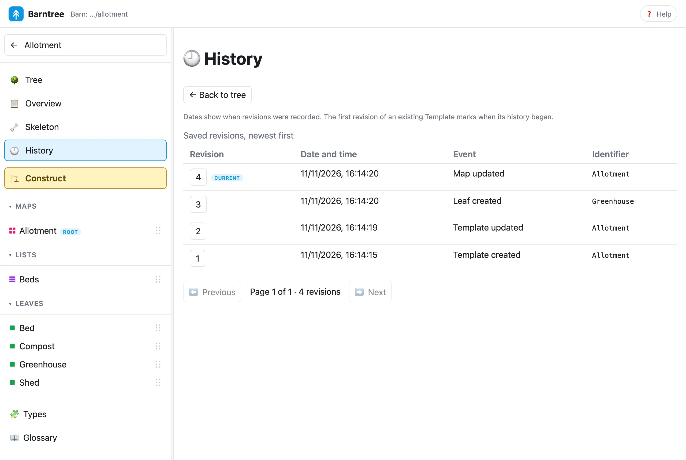

Revisions and history
Every saved change, kept as it was.
Every explicit save of a Template or a Construction records an immutable revision. A save that changes nothing records none. A Template and a Construction each have their own history, and renaming keeps it. A copy starts its own.
Read a history #
$ vendor/bin/barntree construction:history 3207a1c11fb74907574c9158b2fa812f
+----------+----------------------------------+----------------------------------+----------------------+----------------------------+
| Revision | GUID | Recorded at | Event | Identifier |
+----------+----------------------------------+----------------------------------+----------------------+----------------------------+
| 5 | 99459a8719ba0fb2f78c9342ba13a818 | 2026-11-11T16:21:25.484955+00:00 | Member deleted | Bed — Courgettes |
| 4 | 774a0ce3377400ef1a4a0d2edd23c570 | 2026-11-11T16:21:25.216984+00:00 | Member renamed | Bed — Carrots → Courgettes |
| 3 | f3d1bd75b615327c68370767096738d8 | 2026-11-11T16:21:24.809730+00:00 | Member added | Bed — Carrots |
| 2 | 372bbb6fad1f6bde9869042c7fcfcb29 | 2026-11-11T16:21:24.672595+00:00 | Member added | Bed — Beans |
| 1 | 3ead1efb447667fabc3edc3520dc4d39 | 2026-11-11T16:21:23.862587+00:00 | Construction created | Plot 12 |
+----------+----------------------------------+----------------------------------+----------------------+----------------------------+
Page 1 of 1 · 5 revisionsNewest first. Each row has the revision number, its full id (a GUID), the date it was recorded, and the events and identifiers that changed. A save that combined several changes lists every event.
$ vendor/bin/barntree template:history Allotment
+----------+----------------------------------+----------------------------------+------------------+------------+
| Revision | GUID | Recorded at | Event | Identifier |
+----------+----------------------------------+----------------------------------+------------------+------------+
| 4 | 06d23b48d178e90552d6283ee018486c | 2026-11-11T16:21:26.581869+00:00 | Map updated | Allotment |
| 3 | d189249a8184d59c93349fccc55cfed9 | 2026-11-11T16:21:26.443957+00:00 | Leaf created | Greenhouse |
| 2 | 92d19b533f1e626d91c1f5c4b66a3ef3 | 2026-11-11T16:21:26.307765+00:00 | Template updated | Allotment |
| 1 | 3c46bfb7e7251ee4a668cf2dd6a79557 | 2026-11-11T16:21:21.728164+00:00 | Template created | Allotment |
+----------+----------------------------------+----------------------------------+------------------+------------+
Page 1 of 1 · 4 revisionsA Template’s events say what kind of type changed: Leaf created, Map updated, Template updated. Pages hold 25
revisions by default; --limit takes 1 to 100, and --page chooses the page.
$ vendor/bin/barntree construction:history 3207a1c11fb74907574c9158b2fa812f --page=2 --limit=2
+----------+----------------------------------+----------------------------------+----------------+----------------------------+
| Revision | GUID | Recorded at | Event | Identifier |
+----------+----------------------------------+----------------------------------+----------------+----------------------------+
| 5 | 99459a8719ba0fb2f78c9342ba13a818 | 2026-11-11T16:21:25.484955+00:00 | Member deleted | Bed — Courgettes |
| 4 | 774a0ce3377400ef1a4a0d2edd23c570 | 2026-11-11T16:21:25.216984+00:00 | Member renamed | Bed — Carrots → Courgettes |
+----------+----------------------------------+----------------------------------+----------------+----------------------------+
Page 2 of 4 · 7 revisions$ vendor/bin/barntree construction:history 3207a1c11fb74907574c9158b2fa812f --page=9
Page exceeds the available history.Read an earlier state #
A revision is a snapshot you can read without changing anything. Give its id:
$ vendor/bin/barntree template:show Allotment --revision=3c46bfb7e7251ee4a668cf2dd6a79557
Allotment
Revision: 1 (3c46bfb7e7251ee4a668cf2dd6a79557)
Allotment [Allotment, map]
Beds [Beds, list]
Bed [Bed, leaf]
Compost [Compost, leaf]
Shed [Shed, leaf]$ vendor/bin/barntree construction:show 3207a1c11fb74907574c9158b2fa812f --revision=REVISIONA revision id and a file token are different things. A token identifies the exact current file. A revision id identifies a saved snapshot for good. A file edited outside Barntree can differ from its last recorded revision, and a read says so when no recorded revision matches.
Where history begins #
A Template file you add by hand has no history yet. Barntree doesn’t import it; it is listed with no revision. The first time you read its history, or open it in the app, it records the file as it is, once, and that is revision 1. Its date is when history began, not when the file was written.
$ vendor/bin/barntree template:list
Barn: …/allotment
+-----------+----------------------------------+----------+-----------------+
| Name | Document ID | Revision | Source Template |
+-----------+----------------------------------+----------+-----------------+
| Allotment | bd3708f38810ec991ef9a2470b5abe52 | 4 | |
| Kitchen | | | |
+-----------+----------------------------------+----------+-----------------+$ vendor/bin/barntree template:history Kitchen
+----------+----------------------------------+----------------------------------+------------------+------------+
| Revision | GUID | Recorded at | Event | Identifier |
+----------+----------------------------------+----------------------------------+------------------+------------+
| 1 | c8f33784e5fdec449ef0983f8057b5f3 | 2026-11-11T16:21:32.524023+00:00 | Template created | Kitchen |
+----------+----------------------------------+----------------------------------+------------------+------------+
Page 1 of 1 · 1 revisionsOther read commands don’t create revisions.
The Construction keeps its source #
Each Construction records the Template revision it came from. In the app, its overview links to that exact revision as a read-only snapshot, with no need for the live Template. Restoring an old revision, or moving a Construction to a newer Template, is not part of this version.
In the browser app #
History is in each Template’s and Construction’s own menu. It shows a compact table, newest first, 25 to a page, and the newest is marked Current. Select a revision’s number to open its read-only snapshot and its full id; Back to history returns to the same page.
